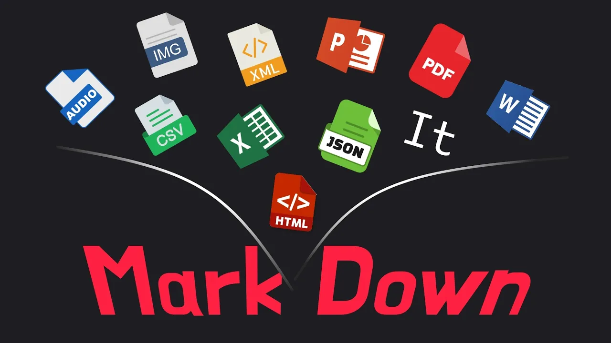

MarkItDown 的正確定位：文件 ingestion layer，不是排版還原器
官方 README 已經講得很清楚：它是給 LLM 與文字分析流程使用的 Markdown 轉換工具。這代表它的輸出重點是標題、列表、表格、連結、段落層次這些「語義與結構」，不是為了讓人眼看起來與原稿一模一樣。
如果你的目標是讓 AI 更好讀文件，MarkItDown 是前處理工具；如果你的目標是做高擬真出版還原，它就不是主角。

先講清楚它在解決什麼痛點
文件格式太雜
PDF、Word、PPT、Excel、HTML、JSON、圖片、音訊各自有不同讀取方式，人工整理很耗時。
直接丟原檔常常效果差
模型不是完全看不懂，而是對於結構混亂、版面複雜、表格破碎的輸入很容易理解失真。
統一轉成 Markdown
把不同來源先轉成同一種結構化文字格式，讓後續摘要、索引、embedding、問答與 agent 調用比較穩。
減少前處理碎工
你不用每個格式各找一套 parser，再自己拼接清洗流程。
支援格式很多，但要分清楚「內建支援」和「延伸能力」
| 類型 | 官方 README 狀態 | 教材應該怎麼理解 |
|---|---|---|
| PDF / Word / PowerPoint / Excel | 核心支援 | 最適合拿來做文件 ingestion 與知識整理前處理。 |
| HTML / CSV / JSON / XML | 核心支援 | 對資料與網頁型內容特別方便，能統一落到 Markdown。 |
| ZIP / EPub | 核心支援 | 適合做批次內容整理，但輸出仍以分析友善為主，不是人眼最佳化排版。 |
| Images / Audio | 支援，但能力深度有差 | 圖片與音訊可處理，但更高品質 OCR / transcription 往往需要 plugin 或雲端路徑。 |
| 影音網址 | 支援 | 屬於把影音內容拉回可分析文字的一條路，但實作品質仍受依賴與來源內容影響。 |
安裝與使用其實很直白
CLI 用法
pip install 'markitdown[all]' markitdown path-to-file.pdf > document.md markitdown path-to-file.pdf -o document.md
最適合本機快速轉檔、腳本批次化，以及接在既有的 shell workflow 後面。
Python API 用法
from markitdown import MarkItDown
md = MarkItDown()
result = md.convert("test.xlsx")
print(result.text_content)
適合你要把轉換能力嵌進自己的 pipeline、agent service 或資料清洗程式裡。
哪些場景最值得用，不要只把它想成 PDF 轉字工具
技術文件整理
把 PDF 白皮書、規格文件或研究報告轉成 Markdown，再匯入 Obsidian、Notion、Joplin 或向量索引流程。
簡報與匯報材料提煉
從 PowerPoint 或 Word 中抽出重點、章節與圖表說明，讓 AI 做摘要、比對與問答。
RAG / Agent ingestion
先用 Markdown 保存結構，再做 chunk、embedding、檢索或 agent 工具調用，效果通常比原始二進位檔案穩定。
批量資料前處理
配合 shell loop 或 Python，處理整個資料夾、ZIP、結構化輸入，統一輸出標準 Markdown。
本機 MCP 文件工具
讓本機 agent 直接把檔案或 URL 轉成 Markdown，而不是每次手動開檔、複製、貼上。
不是萬用排版修復器
如果你期待「每頁版面像原稿一樣美」，那是另一類工具需求，不是 MarkItDown 的主要承諾。
進階功能真正重要的有三條：plugin、MCP、Azure cloud path
1. OCR Plugin
markitdown-ocr 不是預設核心能力，而是 plugin。它用 LLM Vision 來補 PDF、DOCX、PPTX、XLSX 內嵌圖片的 OCR，不提供 LLM client 時 OCR 會被跳過。
2. MCP Server
markitdown-mcp 讓 agent 用 convert_to_markdown(uri) 工具轉換本機檔、遠端 URL、甚至 data URI。重點是它預設只該跑在 localhost 的可信任環境。
3. Azure Content Understanding
當你碰到掃描 PDF、複雜表格、多頁文件、音訊、視訊與結構化欄位抽取時，官方推薦走 Azure Content Understanding。它還能輸出 YAML front matter 做欄位抽取。
4. Azure Document Intelligence
如果你主要要的是 document layout 與 cloud extraction，也有 Document Intelligence 路徑。它和 Content Understanding 不同，後者更強調多模態與欄位抽取。
這些限制與風險不能省略，尤其是 agent workflow
| 項目 | 官方邊界 | ADLINK 教學上要怎麼提醒 |
|---|---|---|
| 安全 | MarkItDown 會以目前程序權限做 I/O | 不能把不可信任的路徑、URL、內網資源直接交給它處理。 |
| MCP server | 本機可信任用途，預設綁 localhost | 不要為了方便就暴露到公網或任意網段。 |
| 掃描 PDF / 複雜表格 | 高品質抽取應考慮 Azure 路徑 | 本地轉換不是萬能，遇到難檔案要切換策略。 |
| OCR | plugin + LLM client 才完整 | 不要把 OCR 當成預設免費內建滿血能力。 |
| 輸出品質 | 偏向 LLM consumption，不保證人眼排版完美 | 如果交付給人看，通常還要再經過清理或版面整理。 |
對 ADLINK 最直接的落地方式
| 場景 | 現在常見痛點 | MarkItDown 可扮演的角色 |
|---|---|---|
| 教學教材產線 | 來源檔案很雜，PDF / PPT / HTML 混在一起 | 先統一轉 Markdown，再交給 lesson brief、summary agent 或 HTML 產線。 |
| 研究報告與白皮書整理 | 人工摘錄耗時，格式亂 | 把來源先轉為可索引 Markdown，方便做摘要、比對與引用整理。 |
| Wiki / RAG ingestion | 不同文件格式進知識庫很難一致 | 先標準化，再做 chunk、embedding、metadata 與檢索。 |
| Agent 文件讀取 | 每次都手開 PDF、複製內容給 agent | 可透過本機 MCP 或預處理流程，讓 agent 直接吃 Markdown 輸入。 |
| 客戶文件與規格表 | 表格、章節與重點難抽 | 先做文件層轉換，再把真正難的掃描件交給 Azure cloud path。 |
一句話比較：它不是 Pandoc 的替代思路，而是 AI ingestion 思路
傳統文件轉檔思路
目標：給人看 重點：版面接近原稿 常見要求：字型、頁碼、段距、視覺還原
MarkItDown 思路
目標：給 AI / agent / text pipeline 用 重點：結構穩定、內容可讀、token 友善 常見要求：標題、列表、表格、欄位、可索引
導入前先過這張清單
- 先確認目標是 AI ingestion，不是排版還原。
如果需求是給人類閱讀的精緻排版，後面還要再接另一層整理。 - 先挑一批高頻文件類型。
例如 PDF 規格書、PPT 匯報、Word 文件、Excel 表格，先用這些做轉換品質抽查。 - 把 OCR 與掃描件分流。
不要假設所有圖像型文件都能本地一次解決，高難度場景要預留 Azure 路徑。 - 如果要給 agent 用，先處理權限邊界。
MCP server 與本地轉換工具都應該設在可信任環境，不要亂開網路存取。 - 把 Markdown 輸出接進後續流程。
真正價值不是「轉完就放著」，而是進 chunk、embedding、RAG、summary、wiki intake 或 HTML 教材產線。